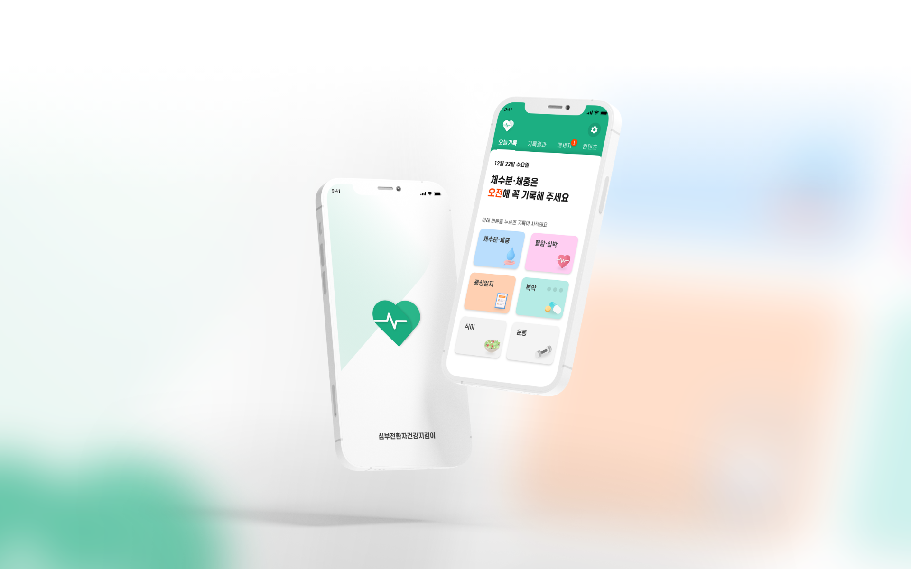
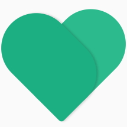
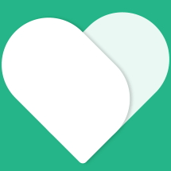
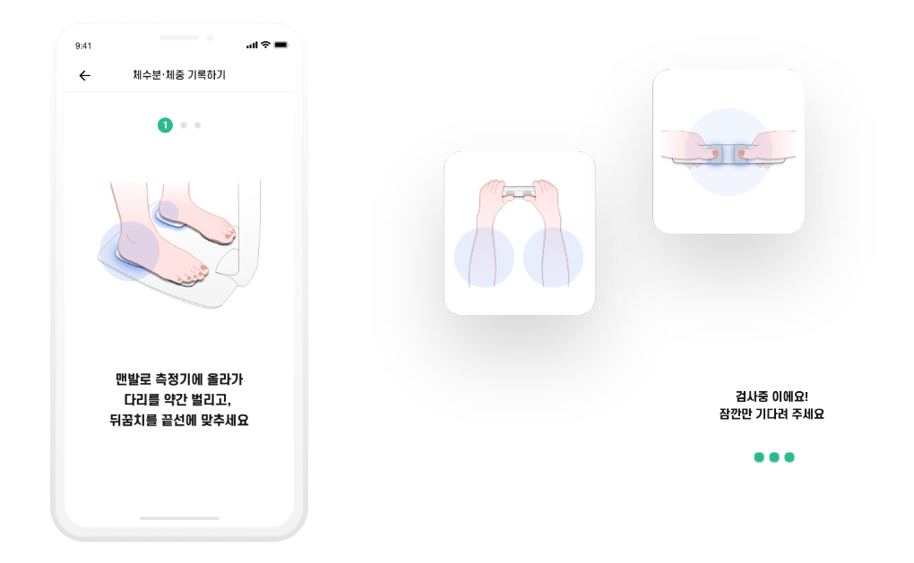
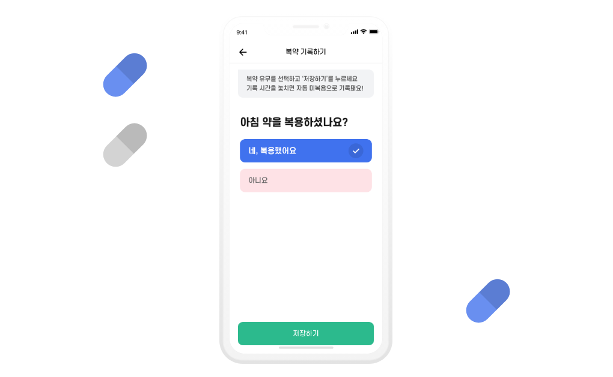
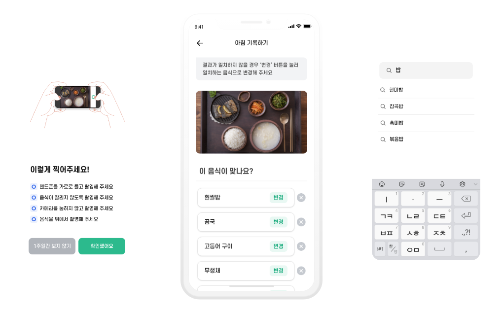
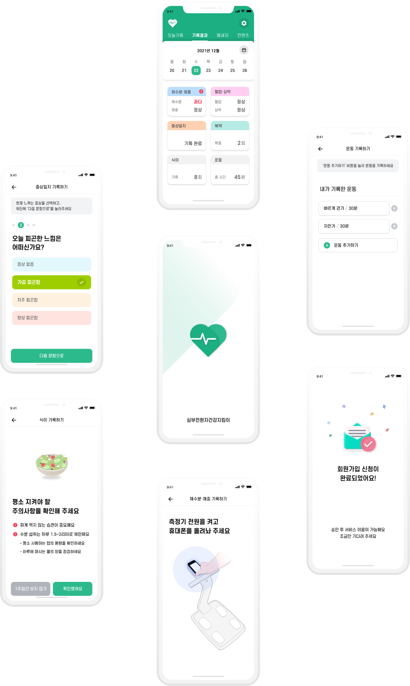

next w
심부전환자 건강지킴이 for doctor
About Project 심부전환자 건강지킴이는, KT-한국노바티스-대한심부전학회에서 환자의 입원 위험관리 서비스 개발을 위해 진행된 POC프로젝트로 자신의 증상을 직접 기록/관리할 수 있는 심부전 환자 전용 앱 서비스 입니다.
심부전 환자의 주 연령인 65세 이상의 고령자가 직접 증상을 기록하는 만큼
일반인을 대상으로 하는 서비스와의 차별점이 필요하였습니다.
고령자도 매일 쉽게 이용할 수 있는 서비스를 목표로, 직관적이고 단순한
구성과 인지성 높은 요소를 사용하고, 나아가 환자에게 긍정적인 메세지와
이미지를 전달하는 서비스를 만들고자 하였습니다.

가독성 좋은 산세리프의 에스코어드림 서체를 사용합니다. 단어가 선명하게 보일 수 있도록 Medium을 기본 굵기로 설정하고 정보 중요도에 따라 Bold, Extra Bold를 사용합니다.


서비스의 특징을 직관적으로 인지할 수 있도록 심장(Heart)과 심장 박동을 결합한 로고는 건강하게 뛰는 심장이라는 메세지를 전달합니다. 또한 둥근 곡선의 모서리와 라인은 서비스의 속성을 부드럽게 전달합니다.
일반적으로 권장되는 사이즈(36~48px)보다 더 큰 사이즈 버튼을 사용하여 터치 기반의 상호 작용의 정확도를 높입니다.
가능한 쉽고 짧은 구어체의 메세지로 서비스를 안내하고, 구체적이고 상징적인 아이콘과 일러스트를 함께 사용하여 기능과 용도의 이해를 돕습니다.




안정적인 정서를 느끼게 하는 그린 컬러로 건강과 회복의 에너지를 전달하고, 식별도가 높은 적색 계열 컬러를 사용하여 위험 및 중요 정보에 대한 인지성을 향상 시킵니다.
next w
심부전환자 건강지킴이 for doctor